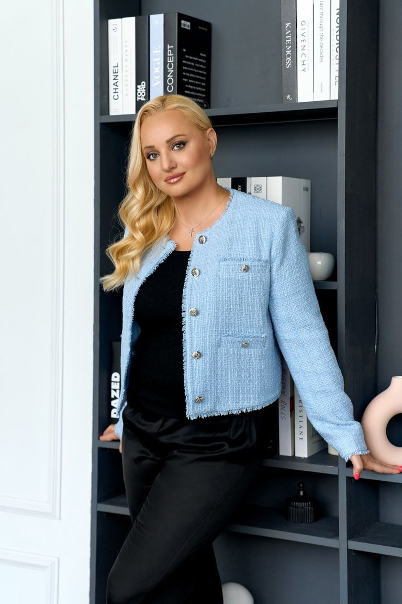

Научитесь говорить «нет» без чувства вины, перестаньте терпеть то, что вам не подходит, и начните выбирать себя — спокойно и уверенно.
Дипломированный психолог, аналитик и гид в системе Дизайн Человека, энерготерапевт, преподаватель исцеления временных линий.
Более тысячи консультаций и десятки выпускников курсов — каждый со своим результатом.

Да, если вы узнали себя в списке «Это про вас, если…»: вам трудно отказывать, после «нет» приходит чувство вины, вы часто ставите чужие интересы выше своих. Специальной подготовки не нужно. Интенсив для взрослых (18+). Он не заменяет помощь врача или психотерапевта: если вы сейчас в остром кризисе, начните со специалиста.
Каждый день открывается один урок, аудиоподкаст и практическое задание. Проходить их можно в любое удобное время: утром, в дороге или вечером. Подкасты удобно слушать на прогулке.
Ничего страшного. Материалы не сгорают: все открытые дни остаются у вас навсегда, и к ним можно вернуться в любой момент. Проходите в своём темпе, хоть по дню в неделю.
Сразу после оплаты откройте бота @zhivye_granitsy_bot, нажмите «Старт» и укажите email или телефон, который вводили при оплате. Бот откроет доступ, и материалы первого дня придут сразу. Каждый следующий день приходит в 10:00 по московскому времени.
Материалы в обоих тарифах одинаковые. В VIP дополнительно есть общий чат группы с Екатериной до 30 декабря: можно задавать вопросы по заданиям, ответы ежедневно с 10:00 до 18:00 МСК. Тариф VIP доступен для покупки до 1 декабря.
Да. До открытия доступа возвращается вся сумма, после — стоимость ещё не открытых дней. Подробно — в разделе 6 оферты.